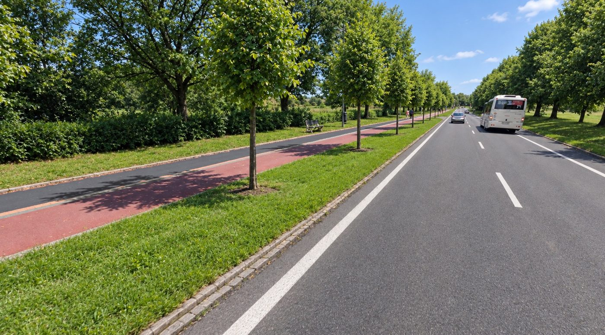
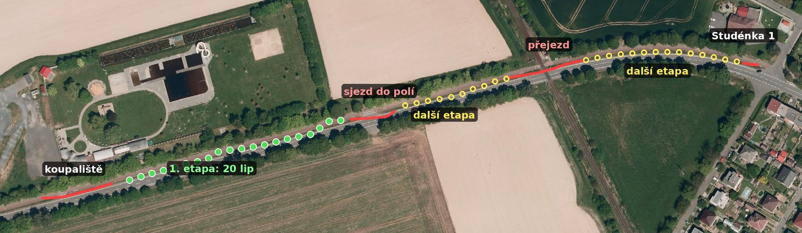

Zajímavější Studénka
Pár nápadů do participativního rozpočtu 2027, jak udělat Studénku zajímavější a hezčí.
Pravidla hry
Hlavní návrh
Stromořadí podél cyklostezky na Sjednocení
Cyklostezka mezi Butovicemi a Studénkou vede přes pole a v létě na ní není kde se schovat před sluncem. Stromy kolem silnice stojí, ale na severní straně stezky a na druhé straně silnice. V poledne, kdy je největší vedro, stín na stezku nedopadá. Chybí řada mezi silnicí a stezkou, na tom travnatém pásu, kde v létě schne tráva.
Návrh: vysadit na tento pás řadu lip. Slunce je v poledne na jihu, takže stromy na jižní straně stezky jí dají stín přesně tehdy, kdy je potřeba. Ulice tím dostane dvojitou lipovou alej, jako mají staré moravské silnice.

Ilustrační vizualizace (AI), zhruba 8–10 let po výsadbě. Podklad: panorama Mapy.com (2023).

Zelené tečky: 1. etapa, 18 lip na úseku asi 180 m mezi sjezdem do polí a koupalištěm. Žluté kroužky: další etapy. Červeně: místa, kde stromy nebudou kvůli výhledu (sjezd do polí, železniční přejezd).
Příčný řez (zjednodušeně). Lípa stojí na okraji příkopu u silnice, asi 1,3 m od vozovky. Dno příkopu zůstane volné, voda bude dál odtékat. Polední slunce z jihu: koruna stíní stezku.
Proč lípy: podle fotek jsou stromořadí kolem Sjednocení převážně lípy, takže nová řada s nimi splyne. Lípa malolistá je domácí strom a snese těžkou sprašovou hlínu, jaká tu podle geologického průzkumu z roku 2024 je, i občas podmáčené dno příkopu. Kultivar 'Greenspire' má pravidelnou úzkou korunu, takže se dá vyvětvit nad silnici pro autobusy. Pokud se silnice v zimě solí, je náhradou javor babyka 'Elsrijk', který sůl snáší lépe.
Proč je to proveditelné:
- Pozemek patří městu: silnice i pás jsou na parcele 1394/1, k. ú. Butovice.
- Pod pásem nevedou kabely. Podle projektu cyklostezky z roku 2019 vede kabel veřejného osvětlení po druhé straně stezky. Na tomto úseku je mezi silnicí a stezkou jen mělký travnatý příkop.
- Místo je široké 2,5–3,2 m (podle příčných řezů projektu z roku 2019), takže strom stojí dost daleko od silnice i od stezky. Ke stezce přijde kořenová bariéra, aby kořeny nezvedaly asfalt.
- Výhled se nezhorší. U sjezdu do polí, u koupaliště a u železničního přejezdu zůstane volno.
- Město s tím počítá i samo: v projektu bytového domu za stadionem na Sjednocení navrhuje stromořadí podél nové cyklostezky.
| 18 lip malolistých 'Greenspire', obvod kmene 14–16 cm, s balem | ~98 tis. |
| výsadba: jáma, zlepšení půdy, první zálivka | ~142 tis. |
| podzemní kotvení | ~40 tis. |
| zálivkové vaky, ochrana kmene, mulč | ~29 tis. |
| kořenová bariéra u cyklostezky | ~43 tis. |
| sadovnický projekt, vytyčení sítí, dopravní opatření | ~30 tis. |
| celkem | ~382 tis. |
Odhad podle jednotkových cen z orientační nabídky odborné firmy na výsadbu stromů (říjen 2026) a ceníků výsadby, přepočtený na menší stromy do trávníku. Není to nabídka. Pro srovnání: tři stromy do dlažby na náměstí by stály 774 tisíc, tady se sází do trávy.
Údržba: první tři roky zálivka Technickými službami, asi 1 500 Kč na strom za rok, tedy kolem 27 tisíc ročně. To je pod limitem 10 % ceny projektu. Pak už jen občasné vyvětvení. Sází se na podzim 2027, kdy se stromy sázejí nejlépe, takže to bude hotové do konce roku.
Další etapy v dalších letech: dosázet úsek ke koupališti (asi 6 lip), úsek k přejezdu (asi 10 lip) a za přejezdem směrem ke Studénce 1. Tak, aby u přejezdu a sjezdů zůstal výhled.
- stín na cyklostezce, po které denně jezdí lidi mezi Butovicemi a Studénkou
- stromy rostou a každý rok jsou cennější
- pozemek patří městu, sítě jsou mimo
- plný stín bude až za několik let
- město musí souhlasit se stromy na kraji svého příkopu
Ještě ověřuju: jaká je na úseku povolená rychlost, jestli se silnice v zimě solí, a souhlas města jako vlastníka silnice.
Další kandidáti
Socha na náměstí Republiky

Vizualizace: ledňáček z cortenu na rozetě náměstí Republiky. Ledňáček je symbol Poodří, ladí s muralem v podchodu.
První kus současného veřejného umění ve Studénce. Soutěž pro studenty výtvarných škol, socha na rozetě uprostřed náměstí, třeba ledňáček nebo jiné zvíře z Poodří. Studentské dílo nemusí stát moc. Dražší bude osazení: základ v dlažbě, jeřáb, ukotvení. Nová kašna se staví na místě té staré, takže se nepletou.
- náměstí dostane něco, kvůli čemu se tam člověk zastaví
- studenti umělecké školy dostanou šanci tvořit pro město
- osazení do dlažby může být dražší než socha sama
Kryté posezení

Ilustrace: kryté posezení v nizozemské obytné čtvrti (Drenthen).
Kryté místo, kde se dá posedět, aniž by člověk musel něco kupovat: střecha, lavice naproti sobě, světlo, zásuvky na nabíjení, třeba velká houpačka nebo síť. V Nizozemsku tomu říkají JOP a mají je v katalogu.
- místo k posezení i za deště, bez útraty
- levné, katalogové řešení
- potřebuje dobré místo, aby nikoho nerušilo
Kde: prázdná plocha u Kotvice, nebo u koupaliště a BMX kopečků.
Disc golf a krokusy v parku u Budovatelské

Ilustrace: disc golf v Poličce, postavený z participativního rozpočtu (Deník).
Menší hřiště na 4–6 košů v Butovicích, mezi Budovatelskou a Tovární: hájek se vzrostlými stromy a vedle něj trávník mezi paneláky, dohromady asi 3,7 ha. Pozemky patří městu a nejsou památkově chráněné. V Česku je přes 220 hřišť, v Novém Jičíně mají přes 7 400 zaznamenaných kol a v Hustopečích si lidi po čtyřech letech odhlasovali rozšíření.
Zámecký park by byl na disc golf nejlepší, ale je to kulturní památka. Každou úpravu musí schválit památkáři v Bílovci, park leží v archeologickém území a stojí v něm památná Zámecká lípa. Jde to, disc golf v chráněném zámeckém parku mají třeba v Moravském Krumlově, Pacově nebo Zbirohu, ale vyřizování může trvat měsíce. Proto nejdřív Butovice, a když se to chytí, rozšíření do zámeckého parku.
Doplnit se dá kobercem krokusů pod stromy: desetitisíce cibulek, na jaře fialový park, skoro bez údržby. Disc golf a krokusy se vejdou do 390 tisíc.
- prokazatelně se hraje
- skoro žádná údržba
- v Butovicích pozemky patří městu, bez památkářů
- Bílovec má nové hřiště 8 km odsud
- v Butovicích je blízko silnice, dětské hřiště a paneláky, koše se musí rozmístit bezpečně
- na části trávníku město plánuje parkoviště a na Tovární vznikne psí hřiště, koše se musí rozmístit mimo ně
Obří lavice na starém hřišti ve Studénce 1

Výhled ze starého hřiště přes pole na Beskydy.
Malé hřiště za kostelem, kde se kdysi hrál fotbal, s otevřeným výhledem přes pole na Beskydy. Obří lavice ve výšce kolem dvou metrů, na které dospělí sedí s nohama ve vzduchu jako děti, a před ní deska se jmény vrcholů. V Itálii jich je přes 200 a jezdí se k nim na výlet. K tomu nové branky, aby se tu dalo zase kopat.
Pozemek patří městu (asi 1 200 m²). Topoly kolem stojí většinou na cizích pozemcích. Příklad: obří židle a houpačky ve Vrbně pod Pradědem.
- pozemek patří městu a je vedený jako sportoviště
- výhled na Beskydy, jaký jinde ve Studénce není
- je to daleko od centra
- lavice musí mít zábradlí a statický návrh
Hamaky a bosá stezka v parku u požární nádrže

Park u požární nádrže pod kostelem dnes.
V borovém háji u nádrže pod kostelem jsou jen tři lavičky. Návrh: sítě a hamaky zavěšené přímo mezi borovicemi a okruh pro chůzi naboso z hlíny, kamínků a kůry. V Koreji teď hliněné bosé stezky staví stovky měst. Nejbližší bosá stezka je ve Valašském Meziříčí.
- využije to, co tu už je: stín a borovice
- skoro žádná údržba
- nádrž je požární voda, nic se nesmí stavět do vody ani blokovat místo pro hasiče
- stromy musí zkontrolovat arborista
- na bosou stezku je potřeba kohoutek s vodou na opláchnutí nohou
Pozemky patří městu (cedule „Požární nádrž – majetek města Studénky“). Příklad: Valašská bosá stezka.
Stromy před Kotvicí

Plocha před Kotvicí dnes.
Před nákupním střediskem s poštou je velká popraskaná betonová plocha bez stínu. Stačí rozbít pár panelů, vysadit dva stinné stromy do volné půdy a kolem nich udělat kruhové lavice. Na rozdíl od náměstí tu není potřeba drahý kořenový prostor pod dlažbou.
- stín a místo k posezení u pošty a obchodů
- levnější než stromy na náměstí
- zatím nevím, komu plocha patří. Pokud ne městu, z participativního rozpočtu to nepůjde
Odložené
Mural v podchodu pod nádražím – snad v roce 2028

Podchod dnes.


Dva oblíbené styly: barevný (vlevo) a přírodovědný deník (vpravo).


Další možné styly. Vizualizace jsou ilustrační, vytvořené pomocí AI. Malba stropu by se do rozpočtu nevešla. Stěny jsou navržené tak, aby se strop dal později doplnit, pokud se bude líbit.
Šedesát metrů bílých stěn, kterými denně prochází každý, kdo jede vlakem do školy nebo do práce. Velká malba na téma Poodří: tůně, lužní lesy, rozlivy Odry, čápi, ledňáčci, bobři, kvetoucí louky. Tedy příroda, kvůli které se do Studénky jezdí. Námět je daný, lidi by hlasovali jen o stylu. Ukázky stylů jsou níže. Malovat by mohli například studenti Fakulty umění Ostravské univerzity.
Proč ne letos: podchod patří Správě železnic a podle pravidel musí být projekt na majetku města. Město to tak potvrdilo, takže do roku 2027 to nejde.
Co dál: pravidla na rok 2028 se budou projednávat v srpnu 2027. Navrhuju městu, aby šly podávat i projekty na veřejně přístupném místě, které městu nepatří, pokud s tím vlastník písemně souhlasí. Jinde to už jde, například v Boskovicích, Vracově nebo Ratíškovicích.
Stromy na náměstí

Vizualizace plné verze: stromy se stolky a lavičkami uprostřed náměstí Republiky.
Původní představa: stinné místo uprostřed náměstí, kde se dá posedět u stolku nebo na lavičce kolem stromu.

Vizualizace minimalistické verze: tři stromy a tři lavičky, zhruba 15 let po výsadbě.
Jako první krok jsem chtěl navrhnout jen tři vzrostlé stromy do dlažby se společným kořenovým prostorem a tři lavičky mezi nimi. I tahle minimalistická verze se ale do rozpočtu nevešla: orientační nabídka odborné firmy vyšla na zhruba 774 tisíc Kč s DPH, tedy dvojnásobek limitu, a to ještě bez projektové dokumentace. Většinu ceny tvoří zemní práce a kořenový prostor, samotné stromy jsou levné. Zkusím to probrat přímo s městem.
Co dál
- Ověřuju u města poslední podmínky stromořadí na Sjednocení.
- Do 30. 11. podávám návrh a sháním 20+ podpisů občanů Studénky, budu potřebovat vás.
- Napište do komentářů, jestli byste stromy na Sjednocení podpořili, nebo jestli je lepší některý z dalších kandidátů.
Napadá vás něco lepšího? Napište to taky do komentářů.